Overview
When combining multiple plots with patchwork, legends often need special handling:
- Duplicate legends - Same aesthetic mapped in multiple plots creates redundancy
- Alignment issues - Legends may not align properly across panels
- Spanning - Legends should sometimes span multiple rows
ggguides provides collect_legends() and
collect_axes() to address these challenges.
The Problem: Duplicate Legends
library(patchwork)
p1 <- ggplot(mtcars, aes(mpg, wt, color = factor(cyl))) +
geom_point() + labs(title = "Plot 1", color = "Cylinders")
p2 <- ggplot(mtcars, aes(mpg, hp, color = factor(cyl))) +
geom_point() + labs(title = "Plot 2", color = "Cylinders")
# Default patchwork: duplicate legends
p1 | p2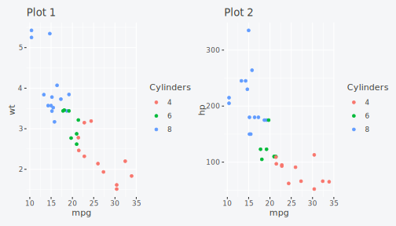
Basic Legend Collection
Use collect_legends() to gather legends from all plots
in a composition:
collect_legends(p1 | p2)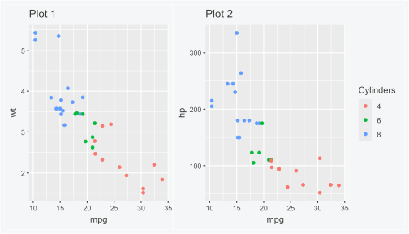
Position Options
Control where the collected legend appears:
collect_legends(p1 | p2, position = "bottom")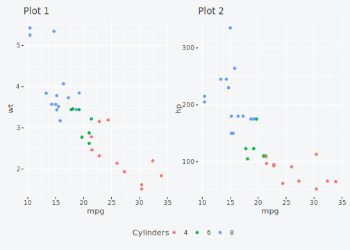
collect_legends(p1 | p2, position = "left")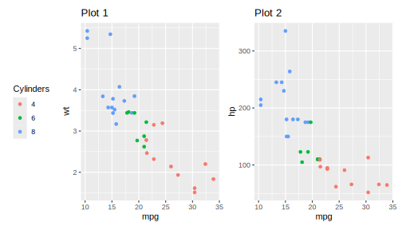
Stacked Plots
For vertically stacked plots, legends can be centered or span the full height. Using different plot heights makes the spanning behavior more visible.
Default: Centered
# Create plots with different heights using plot_layout
p3 <- ggplot(mtcars, aes(mpg, disp, color = factor(cyl))) +
geom_point() + labs(title = "Plot 3", color = "Cylinders")
# Stack with different heights: 1, 1/2, 1/4
stacked <- (p1 / p2 / p3) + plot_layout(heights = c(4, 2, 1))
collect_legends(stacked, position = "right")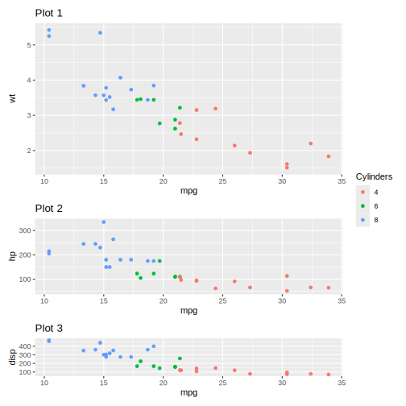
Spanning Full Height
Use span = TRUE to make the legend fill the full
height:
gt <- collect_legends(stacked, position = "right", span = TRUE)
grid::grid.draw(gt)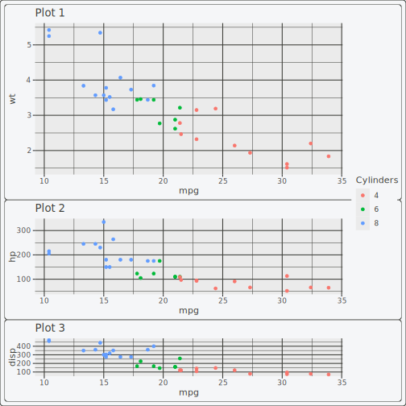
Attaching to Specific Rows
Attach the legend to specific row(s) instead of spanning all:
# Legend attached to row 1 only (the tallest plot)
gt <- collect_legends(stacked, position = "right", span = 1)
grid::grid.draw(gt)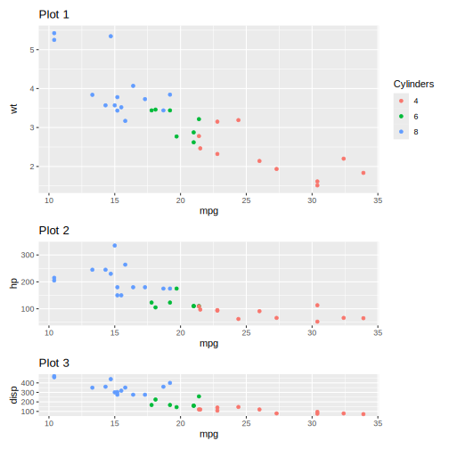
# Legend attached to rows 1 and 2
gt <- collect_legends(stacked, position = "right", span = 1:2)
grid::grid.draw(gt)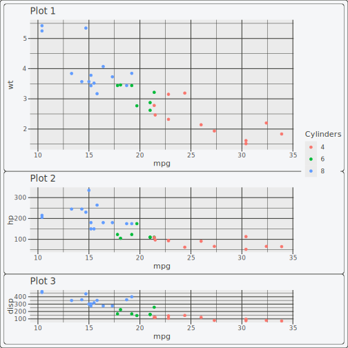
Collecting Duplicate Axes
When stacking plots vertically, the x-axis may be duplicated. Use
collect_axes() to remove redundant axes:
# Plots stacked vertically - x-axis is duplicated
p_top <- ggplot(mtcars, aes(mpg, wt)) +
geom_point() + labs(y = "Weight")
p_bottom <- ggplot(mtcars, aes(mpg, disp)) +
geom_point() + labs(y = "Displacement")
# Without axis collection (both have x-axis)
p_top / p_bottom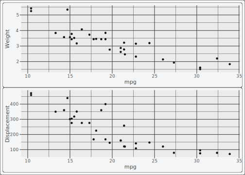
# With axis collection (removes redundant x-axis from top)
collect_axes(p_top / p_bottom)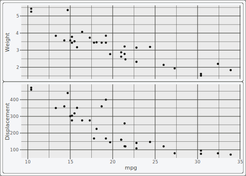
Combining with Styling
ggguides functions work together:
p1_styled <- p1 + legend_style(size = 11, title_face = "bold")
p2_styled <- p2 + legend_style(size = 11, title_face = "bold")
collect_legends(p1_styled | p2_styled, position = "right")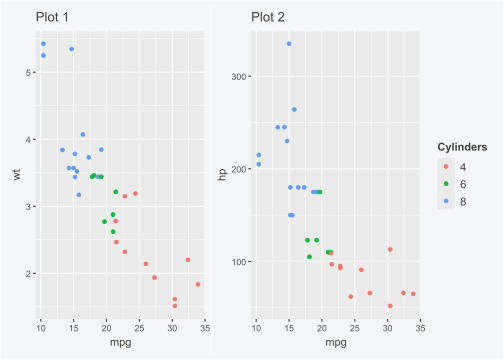
Complex Layouts
Handle more complex patchwork layouts:
p4 <- ggplot(mtcars, aes(qsec, wt, color = factor(cyl))) +
geom_point() + labs(title = "Plot 4", color = "Cylinders")
# 2x2 grid
layout <- (p1 | p2) / (p3 | p4)
collect_legends(layout, position = "right")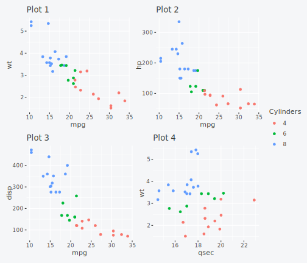
cowplot / Grid Users
ggguides provides cowplot-compatible functions that work without patchwork:
get_legend() - Extract Legend
# Extract legend from a plot
leg <- get_legend(cp1)
# Use with cowplot::plot_grid() or grid::grid.draw()
grid::grid.newpage()
grid::grid.draw(leg)
shared_legend() - Combine Plots with Shared Legend
# Side-by-side with shared legend on right
gt <- shared_legend(cp1, cp2, ncol = 2, position = "right")
#> Warning: No legend found in the source plot. Returning plots without shared
#> legend.
grid::grid.newpage()
grid::grid.draw(gt)
# Stacked with legend at bottom
gt <- shared_legend(cp1, cp2, cp3, ncol = 1, position = "bottom")
#> Warning: No legend found in the source plot. Returning plots without shared
#> legend.
grid::grid.newpage()
grid::grid.draw(gt)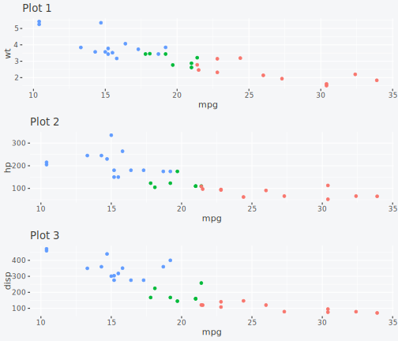
# 2x2 grid
gt <- shared_legend(cp1, cp2, cp3, cp4, ncol = 2, nrow = 2, position = "right")
#> Warning: No legend found in the source plot. Returning plots without shared
#> legend.
grid::grid.newpage()
grid::grid.draw(gt)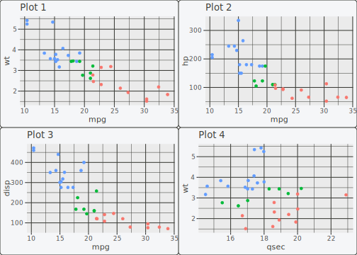
All ggguides styling functions (legend_style(),
legend_wrap(), etc.) work on individual plots regardless of
layout package.
Summary
| Function | Purpose | Key Parameters |
|---|---|---|
collect_legends() |
Gather legends from patchwork |
position, span
|
collect_axes() |
Remove duplicate axes | guides |
get_legend() |
Extract legend as grob | - |
shared_legend() |
Combine plots with shared legend |
ncol, nrow, position
|
Learn more:
- Legend Positioning for single-plot placement
- Styling & Customization for legend appearance